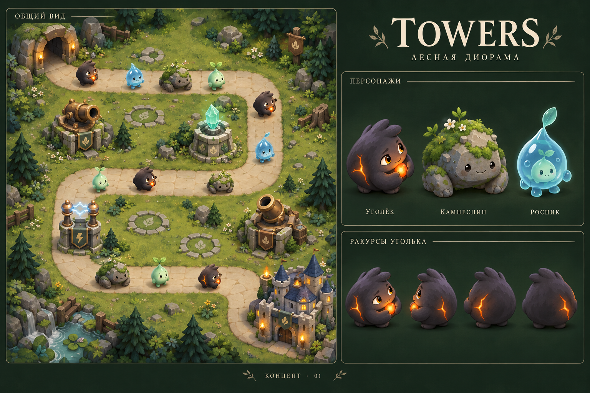

TOWERS / ART DIRECTION / 04.10.2026
Лесная диорама
Объёмные лесные духи на тактическом поле. Единая наклонная камера, выразительные мордочки и мягкий свет: монстрики выглядят маленькими живыми фигурками.
Статус: предложение, версия 01. Иллюстрация задаёт художественное направление; ракурсы, масштаб и плотность сцены предстоит проверить в игровом прототипе.

Художественный эскиз, созданный с помощью ImageGen на основе существующего образа Уголька. Не скриншот работающей версии и не готовый набор игровых спрайтов.
Почему сейчас картинка распадается
В текущем рендерере существо целиком вращается по направлению дороги — это предполагает вид сверху. Замок показывает фасад, кристаллы растут вверх по экрану, а ствол пушки вращается в плоскости поля. У объектов уже есть свет и тени, но нет общего правила, откуда на них смотрит игрок.
01 / Общая камера
Предлагаю начать с ортографической камеры примерно 45° над землёй, без поворота поля ромбом. Видны макушка и лицо, верх и стенки построек. Дальние объекты не уменьшаются. Итоговый наклон выбираем по читаемости на телефоне.
02 / Живые фигурки
Округлые объёмы, матовый уголь, шероховатый камень, мягкий мох. Крупный силуэт и одна характерная деталь важнее мелкой фактуры. Уголёк сохраняет янтарные глаза, ветвистую трещинку и огонёк в компактных ладошках.
03 / Правильные повороты
Монстрик всегда стоит на лапках. При смене направления показываем другой ракурс: лицо, профиль, спину. Для итоговой версии — 8 направлений; для первого опыта достаточно четырёх. На виде со спины огонёк естественно скрывается телом.
04 / Спокойное поле
Приглушённая зелень, светлая дорога, редкие камни и папоротники по краям. Сетку показываем прежде всего при строительстве. Лица, оружие и атаки контрастнее земли. Декор не заслоняет путь и места для башен.
Единый язык для всех объектов
| Объект | Внешний вид | Характер движения |
|---|
| Уголёк | Тёплый угольно-серый корпус, открытое лицо, маленькие цельные лапки, янтарный огонёк. | Переваливается при ходьбе; бережно держит огонь. Свет пульсирует внутри трещинки. |
| Камнеспин | Приземистый валун с тяжёлой спиной и мхом; заметно шире Уголька. | Медленный перенос веса, короткие тяжёлые шаги. |
| Росник | Полупрозрачная голубая капля с маленьким существом внутри. | Мягко пружинит; лечебный импульс расходится по земле. |
| Пушка и мортира | Низкие каменные основания, бронзовый металл, видимые верхние и боковые плоскости. У мортиры широкий ствол с подъёмом. | Вращается верхняя часть вокруг вертикальной оси; меняются ракурс и видимая длина ствола. Основание остаётся неподвижным. |
| Мороз и молния | Мятный кристалл и пара электродов. Различаются силуэтом, а также цветом. | Пульсация внутри кристалла, короткий разряд между электродами. |
| Замок | Компактная каменная крепость с видимыми крышами и боковыми стенками. Тот же наклон камеры, что у персонажей. | Флаг и тёплые окна; короткая реакция на удар. Улучшения добавляют конструктивные детали. |
Свет и цвет
Мягкий общий свет слева сверху, затемнённые боковые поверхности, контактная тень под лапками. Тень остаётся на земле, когда персонаж подпрыгивает. Свет огонька локальный: он подчёркивает лицо и ладошки, не заливает дорогу.
Лес · #263E31Дорога · #B8AD83Уголь · #48443EОгонь · #F1AD46Мороз · #92D4C5
Как перенести в игру
Рекомендуемая основа — 2.5D со спрайтами в существующем Canvas. Художественный объём можно получить заранее отрисованными ракурсами. Полный 3D-движок для этого направления не обязателен.
Логическая карта 9×13 и правила боя сохраняются, а слой отображения получает общую проекцию, точки опоры у ног и основания башен, сортировку объектов по глубине. Потребуется согласовать выбор клетки, отображение радиусов и точки вылета снарядов с новой проекцией. Персонажи и здания должны корректно перекрывать друг друга; полоса здоровья остаётся над головой.
Наклон сжимает видимую глубину поля: на портретном экране отдельно проверяем размер персонажей и высоту интерфейса. Слишком высокие башни и крупные фигуры будут закрывать дорогу, поэтому архитектура остаётся приземистой.
Первый проверочный фрагмент
Один изгиб дороги, Уголёк в четырёх направлениях, пушка и замок. Проверяем ходьбу к камере и от неё, поворот, стрельбу, проход за башней и читаемость группы из 12–15 существ на экране шириной 390 px. Смотрим персонажей в размере 24, 32 и 48 px. Только после этого масштабируем стиль на весь бестиарий.